Goat milk ice cream? Some of you might he raising your eyebrows right now because you've heard goat milk tastes funny. We could blame the funny-taste fallacy on a conspiracy concocted by those comical Far Side cows. But more likely it is because someone kept the buck among the herd, especially at milking time. A buck can be quite odoriferous, and his strong, musky scent can permeate the milk. The fact is, properly collected goat milk tastes just as good as cow milk. Some people believe it tastes better.
"I have a friend whose brother refused to drink goat milk because he knew he wouldn't like it," says 20-year goat veteran Gail Damerow, editor of Rural Heritage magazine and author of Your Goats and Raising Milk Goats Successfully. Gail's friend bought a carton of cow's milk from the store for her visiting brother. After he emptied the carton, his sister refilled it with fresh goat milk. The scenario continued until a week later, when he noticed the carton looked a bit worn around the edges. She admitted he'd been drinking goat milk all week. He became an instant convert.
More of the world's people consume goat milk than cow milk. Goats are hardy animals: They adapt well to heat and cold, productively forage and graze, require little space and are inexpensive to keep. Since mature does (females) usually weigh between 120 to 135 pounds (dwarf breeds can weigh between 35 to 85 pounds), they're much easier to handle than hefty cows, which can weigh 1,000 pounds each. Goats may surprise you in other ways, as well. They're highly intelligent, remarkably friendly creatures. And, since they're active, extremely agile and very curious, their antics can amuse you for hours. With all that in mind, it's easy to see why dairy goats can he the ideal addition to today's family farm or homestead.
There are more than 200 different goat breeds worldwide; six primary breeds dominate the dairy goat arena: Alpines, Oberhaslis, Sadness, Toggenburgs, LaManchas and Nubians. While all breeds generally do well in most of the country, the first four breeds listed are well-suited to cooler climates since their origins can be traced to Swiss mountain regions. LaManchas and Nubians hail from tropical and desert climates where it's wanner, and they tolerate hot summer conditions better than the Swiss breeds.
You can recognize Alpine goats by their upright ears and long necks. This medium-to-large, hardy breed also milks well. Their coats are two-toned, with black and white the most common colors.
Oberhaslis have distinctive coloration, and are usually hay (reddish brown) with black markings or sometimes completely black. A beautiful medium-to-small breed, Oberhaslis don't produce quite as much milk as the other breeds.
Saanens are commonly referred to as the Holstein of the goat world. Noted as heavy milkers, they are often the breed used in commercial dairies. One of the larger breeds, amiable Saanens are Usually all white.
Toggenburg coat colors range from fawn to deep chocolate. A medium-size breed known for long lactations, their inquisitive nature can sometimes become quite challenging.
LaManchas are unique from the other breeds in that they have no visible external ears. (The ears are actually just very small.) Another well-known trait is their calm and gentle nature. Also noted as a good milker, this larger breed comes in many colors.
Several characteristics distinguish Nubians from other dairy breeds: They have floppy ears, a convex, Roman nose and an energetic disposition some say is just plain stubborn. Another large breed with myriad coat colors, Nubians are known as the jerseys of the goat world for producing milk with high butterfat content.
Longtime goat breeders Ray and Dene Engeman, of Marcola, Oregon, raise Nubians and LaManchas on six sloping, forested acres. "When we first moved here 36 years ago, it didn't take too long to figure out a milk cow wouldn't be able to manage these slopes," say Dene. "We fell in love with the LaManchas' gentle disposition and calm nature, and chose Nubians for their pendulous ears and variety of colors," she adds. "However, LaManchas remain our personal favorite."
One up-and-coming dairy breed you might want to consider is the Nigerian Dwarf, a West African native that is turning out to be a surprisingly good milker. Cheryl Smith, editor of Ruminations, Nigerian Dwarf Dairy Goat Magazine (see "For More Goat Info," Page 33), acquired her first Nigerians about four years ago. The breed's smaller size-mature does weigh between 30 and 50 pounds-friendly personality and variation in coat color make Nigerians very appealing. Despite their small size, Nigerian does kid (give birth) very easily. But the best thing, says Cheryl, is the fact that Nigerian milk has extremely high butterfat and protein content. The higher protein means you get more cheese out of the milk. Toward the end of a lactation, Cheryl says, the butterfat can reach 8 percent to 10 percent, compared to about 3.5 percent to 6 percent for other breeds.
Depending on the breed you choose and your location, the expense of purchasing a goat can vary widely. Expect to pay anywhere from $75 to $500, depending on whether or not the goat is registered. Buy registered goats if you want to compete in shows. Above all, try to buy your goats from a breeder who lives nearby. That way the goats are already adapted to your climate, plus you can see the environment where they were raised.
There are many ways to find a goat breeder. Start by visiting goat shows at your county or state fair. Get a referral from your local feed store or county extension office. You can also contact the American Dairy Goat Association (see "For More Goat Info," Page 33) or the specific organization that promotes your chosen breed for a list of local breeders. It's best to avoid livestock auctions or sale barns. Most importantly, invest in the best quality goats you can afford: You'll be glad you did.
Goats are a friendly bunch and enjoy being in each other's company, so always start off with at least two goats.
Give your goats plenty of outside space where they can play, exercise and forage to their heart's content.
As with any farm animal, certain needs should be provided for before bringing your goats home. For starters, goats need some type of shelter. It doesn't need to be anything elaborate, just a place that's clean, dry and draft-free yet well ventilated. It can be anything from an old outbuilding to a small shed or barn.
In her book Your Goats, Gail recommends at least 15 square feet of housing per goat. Miniature goats can get by on less, about 10 square feet per goat. Stalls should be equipped with a rack for hay, a trough or box for grain, and a water pail holder. Include extra space for storing feed and other supplies, as well as a stand for milking. Separate the storage and milk areas from the goat quarters with a wall or partition that's 4 feet high. It's important to keep the goats' bedding clean and dry. Top off the bedding as needed with fresh straw and replace bedding that gets damp or soiled. And remember: Goat manure and bedding are great for the garden.
Give your goats plenty of outside space where they can play, exercise and forage to their heart's content. While some experts suggest 200 square feet as the minimum, more space is even better, especially if you want to give your goats access to fresh forage. Of course, goats with room to roam come with a price: good, sturdy fencing. A fence that keeps in cows or even sheep doesn't guarantee goats can't wander beyond its boundaries. They can squeeze through openings, nudge their way through weak areas and hop a fence if a large rock or elevated ground is nearby. A woven-wire or high-tensile electric fence at least 4 feet high is best for property boundaries. Keep the spacing tight on the lower portion of the fence so the younger goats can't get through. An electric fence works just fine for dividing the pasture into plots.
It's best to allow your goats access to pasture and forage. They'll eat whatever is available: Goats are opportunistic feeders and appreciate a varied diet. This characteristic not only saves you time and labor, but helps reduce your feeding costs. Try to keep an eye on what's growing in your pasture, though; some types of plant, such as wild onions, can drastically alter the flavor of the milk. Make sure your goats have some type of roughage year-round, such as twigs, bark, leaves or pasture. Corn and sunflower stalks from the garden are another good source, as well as a fine-stemmed hay, such as alfalfa or clover.
In addition to pasture and/or forage, a milking doe should receive 2 to 3 pounds of commercial feed each day, such as a 16 percent dairy ration, along with 3 or more pounds of hay. The amount will vary depending on other food sources, quality of feed and your goat. Ask your breeder about their feeding program. Provide fresh water at all times.
Goat-proof any areas that might have plants growing that can be toxic to goats, such as oleander, yew and larkspur. You can find information about poisonous plants in your area by checking with your county extension agent, listed in the government pages of the phone book. Reference material on poisonous plants is also available through the U.S. Department of Agriculture and your state's agriculture department.
Keep the milk supply flowing by breeding your does once a year, starting when they are 8 months old or when the does weigh at least 80 pounds (for regular-size breeds). Dairy goats are usually bred in the fall; however, they may be in heat any time from August to January. Does remain in heat for three days, usually on a 17- to 21-day cycle. Put your does and buck together at this time. Once bred, the buck should be separated from the does to ensure fresh-tasting milk. Kidding (giving birth) will occur about 145 to 150 days after breeding. Does usually have twins-sometimes triplets, depending on the breed. The doe will "freshen" and give milk after the kids are born. If kept milked, she will continue producing for up to 10 months. Allow her a dry period of about two months before she delivers new kids and begins producing milk again.
During the milking period, you and the kids can share the milk; the doe should provide plenty. The best plan, says Gail, is-after the kids are 2 weeks old-confine them overnight and milk the doe in the morning. After her morning milking, leave the kids with the doe to nurse at will. Some people milk the does twice a day and give the kids bottles, which is labor-intensive but helps accustom kids to human handling.
Milking is easy to learn: Just ask anyone who's ever milked a cow or goat to show you how. Milking is easier if you feed the does grain as you milk them. Milk out both udders completely and milk at about the same time each day. If you milk twice a day, separate the milking time by about 12 hours. Keep your milking equipment and area clean. Once you've finished milking, cool the milk-filled container as quickly as possible by setting it into a large pan filled with cold water for about 15 minutes. Occasionally stirring the milk with a clean utensil will help it cool evenly. Once the milk has cooled, pour it into glass containers and refrigerate immediately.
Goat milk differs from cow milk in that the butterfat globules are smaller, so they disperse more easily, making goat milk naturally homogenized. Unlike cow milk, the cream will not separate on its own, so goat milk products will be much smoother and creamier. If you want to make butter, you'll need to buy or borrow a cream separator. Another difference you may notice is goat milk appears whiter than cow milk.
You can keep your goats healthy and avoid a lot of potential problems, such as pneumonia, diarrhea or parasites, by keeping the goat house and bedding clean and by providing draft-free housing with adequate ventilation. If you check your goats daily you'll be able to identify minor ailments before they become serious. Most likely, you'll need to worm and vaccinate your goats, although the amount and frequency needed will vary depending on your location and your goats. Some people worm their goats four times a year, others only once a year. Your county extension agent or breeder can give you valuable advice.
"Some herds suffer from excessive worm loads, to the point of dead goats, because their forage area isn't properly managed, and the goats aren't wormed often enough for their situation," Gail says. Worms can be a serious problem for goats, especially in humid or rainy climates. "By periodically opening fresh pasture and worming seasonally, we've been able to avoid that problem," she says.
You'll need to castrate any buck kids (usually before they're 2 weeks old) that you aren't keeping for breeding purposes. (See "Under the Knife," Page 37.) Some people opt to dehorn the kids, usually when they are 1 week old, with a tool called a disbudding iron, which looks like a soldering iron with the tip sawed off. Trim the hooves regularly: how often will depend on where your goats spend most of their time, on soft ground and bedding or on hard ground and rough surfaces. Check Gail's book, Your Goats, for details (see MOTHER'S Bookshelf, Page 103.)
Beyond the bounty of wholesome products they provide, don't forget to spend time with your goats and enjoy their friendly nature and jovial behavior. They're sure to put a smile on your face.
On MOTHER's Bookshelf,
Page 103
Your Goats: A Kid's
Guide to Raising and
Showing
By Gail Damerow
$14.95
Resources:
American Dairy Goat
Association
P.O. Box 865
Spindale, NC 28160
(828) 286-3801
www.adga.org
Appropriate Technology
Transfer for Rural Areas
P.O. Box 3657
Fayetteville, AR 72702
(800) 346-9140
www.attra.org
Offers several free
publications about
raising dairy and
meat goats
Dairy Goat Journal
PO. Box 10
Lake Mills, WI 53551
www.dairygoatjournal.com
$21 per year
Ruminations, Nigerian
Dwarf Dairy Goat
Magazine
22705 Highway 36
Cheshire, OR 97419
www.karmadillo.com/ruminations
$24 per year (6 issues)
Rural Heritage
281 Dean Ridge Lane
Gainesboro, TN 38562
www.ruralheritage.com
Bimonthly journal on using
draft animals in harness,
including goats
Dairy goats offer a goldmine of opportunity besides fresh milk for drinking. Having raised dairy goats for nearly 20 years, Gail Damerow says one reason she keeps a small herd of Nubians on their farm in Tennessee is for extra milk to make yogurt, simple cheese and ice cream-lots and lots of ice cream, in many flavors. Gail has compiled her large collection of ice cream recipes into her book, Ice Cream! The Whole Scoop. Gail also freezes as much milk as she has room for, which she later thaws when the does are dry. "We could produce milk year-round by staggering the breeding, but I like not having to milk during the worst of winter's freezing weather," she says.
At Dene and Ray Engeman's farm in Oregon, springtime often sees the goat population soaring to 100. "The high goat numbers don't last long," Dene says. The couple sells milkers to families and several dairies. Choice kids are kept as replacements or are sold for breeding stock, while the buck kids are made into wethers (castrated) and sold as pets, pack goats or for meat. "By the time fall comes around again, we're usually back down to 30," she says. Show and fair season can bring in extra money in the form of premiums.
Cheryl Smith became interested in dairy goats when she was in law school more than 12 years ago. A French professor invited Cheryl over to sample some of her goat milk cheeses, and Cheryl became hooked. Today she maintains a small herd of Nigerian Dwarfs and makes a variety of products from their milk. Naturally, yogurt and cheeses are on the list, but so is one inedible item: goat milk soap.
|
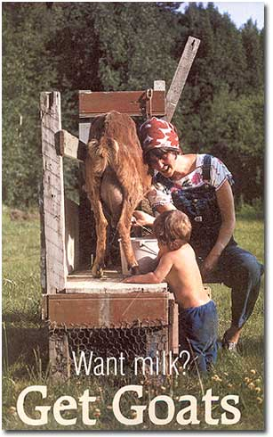 DAVID CAVAGNARO Recognized by their floppy ears, Nubians are known for their rich milk. |
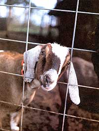 RICK WETHERBEE The mutual admiration between people and goats sometimes gets a very early start. |
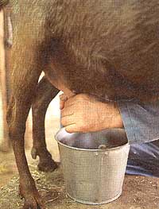 RICK WETHERBEE Long on calm and gentless, short on ears, La Manchas charm with their sweet dispositions. |
|
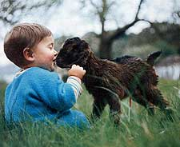 DAVID CAVAGNARO Nigerian Dwarf goats weigh 30 to 50 pounds and give very rich milk. |
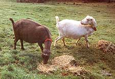 RICK WETHERBEE Goatskins can be tanned to make excellent leather. |
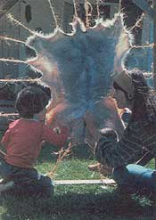 RICK WETHERBEE Great brush managers, goats thrive on hilly terrain and feed on leaves and twigs. |
|
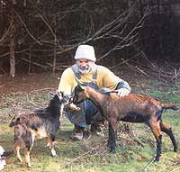 DAVID CAVAGNARO Saanens are heavy milkers. |
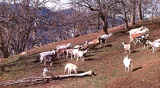 RICK WETHERBEE Oberhaslis are medium size |
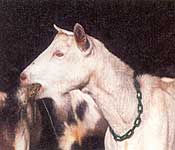 Alpines originated in Alps. |
|
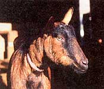 Toggenburgs have long lactations. |
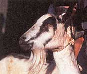 |
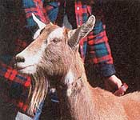 |
|
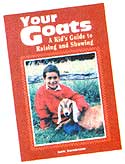 |
|
|